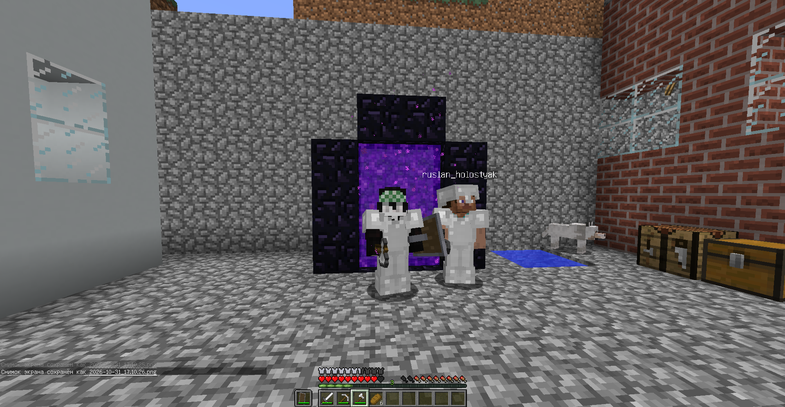
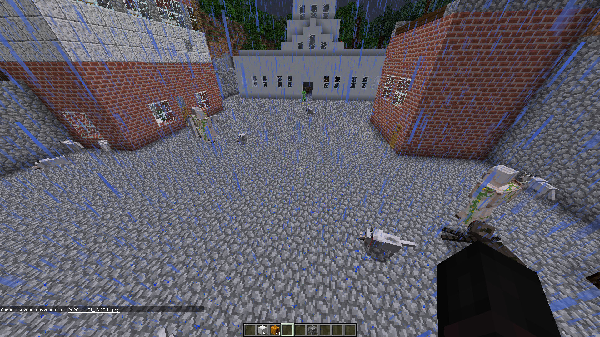
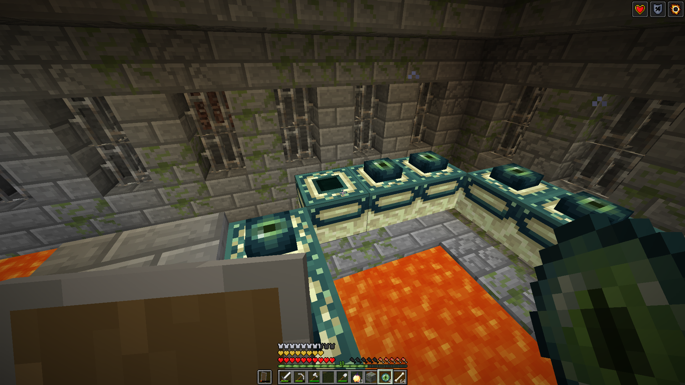

Летопись Эфритонии
От первых дней Козани до тяжёлой войны 1270 года. Ниже — известные даты, важные постройки, экспедиции и испытания государства. Фотографии вплетены в повествование, чтобы история читалась как архив, а не как сухой список.
Хронология государства
955 год — настоящее время летописиОснование Эфритонии
На версии Minecraft 1.12.2 появляется Эфритония. В тот же период возникает Визоград — государство, которое позднее станет противником Эфритонии. Начинается история Козани и первых поселений.
Принятие христианства
Христианство становится религией государства. С этого времени вера входит в историческую и культурную жизнь Эфритонии.
Строительство Белого дома
В столице возводится Белый дом — главное правительственное здание Эфритонии. Спустя столетия он переживёт нападения криперов и станет одним из центральных мест военной истории страны.
Подготовка к Незерской кампании
Начинается сбор ресурсов и снаряжения для дальней экспедиции. В поход отправляются две собаки. Во время подготовки Белый дом дважды подвергается нападениям криперов, но после каждого случая здание восстанавливают; человеческих жертв нет.



Незерская кампания и битва у портала
Отряд проходит через Незер, сталкивается с ведьмами и свинопасами и добирается до крепости. Цель достигнута: добыты стержни ифрита. Путь не обходится без потерь — первая собака погибает в начале экспедиции, вторая незадолго до прибытия к крепости. Во время возвращения у портала домой происходит крупное сражение. В 1245 году кампания завершается возвращением в Эфритонию.


Эндская кампания
Сразу после возвращения начинается подготовка к следующей экспедиции. По дороге к порталу в Энд сжигается деревня, которая, по сведениям Эфритонии, собиралась напасть на страну; вместе с ней сжигается окружающий лес. Отряд достигает портала, с большим трудом побеждает дракона Края и получает драконье яйцо.





Исследование городов Края
После победы над драконом участники направляются в города Края. Там добываются элитры и множество ценных ресурсов. Полученные предметы становятся частью истории и наследия Эфритонии.


Переход к мирному развитию
Масштабные экспедиции завершаются. Эфритония переключается на восстановление и обустройство: появляются новые дома, пшеничные фермы и хозяйственные сооружения. Страна постепенно возвращается к повседневной жизни.


Война с разбойниками
Начинается экспедиция за территориями разбойников. Сначала разбиваются два аванпоста, затем отряд направляется к особнякам. Во время поджога особняка на экспедицию нападают, и участники немедленно возвращаются на территорию страны. Сражения охватывают всю Эфритонию; особенно тяжело приходится у Белого дома и Южного поста.


В нападении участвуют многочисленные разбойники, боевые свиньи и другие противники. На защиту страны выходят жители и защитники, железные големы, собаки и свиньи. Погибают големы и животные, почти всё население оказывается затронуто катастрофой. Точное число потерь не установлено. Разбойники отступают, но угроза их возвращения сохраняется.


Восстановление после Великой битвы
В течение нескольких игровых дней начинается восстановление населения и домов. Отдельное внимание уделяется безопасности: освещаются регионы, улицы и участки территории. Эфритония возвращается к мирной жизни, сохраняя память о пережитой битве.